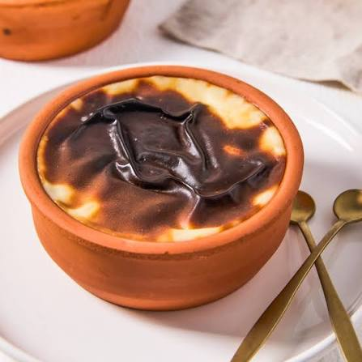
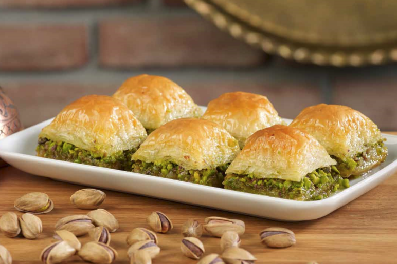

|
Muffin |
- 2 su bardağı un
- 1 su bardağı şeker
- 1/2 su bardağı sıvı yağ
- 1 su bardağı süt
- 2 adet yumurta
- 1 paket kabartma tozu
- 1 paket vanilya
- 1/2 su bardağı damla çikolata
|
- Yumurta ve toz şekeri derin bir kapta iyice çırpın.
- İçine süt ve sıvı yağı ekleyip karıştırmaya devam edin.
- Un, kabartma tozu ve vanilyayı eleyerek karışıma ilave edin.
- Son olarak damla çikolataları ekleyip spatula ile nazikçe harmanlayın.
- Muffin kalıplarına paylaştırıp önceden ısıtılmış 180 derece fırında pişirin.
- Afiyet olsun!
|
Kolay |
30 dakika |
 |
Sütlaç |
- 1 litre süt
- 1 su bardağı pirinç
- 1 su bardağı şeker
- 1 paket vanilya
- 1 çay kaşığı tuz
|
- Sütü bir tencereye koyup kaynatın.
- Pirinçleri ekleyip pişirin.
- Şeker, vanilya ve tuzu ekleyip karıştırın.
- İçine süt ekleyip karıştırarak pişirin.
- Çok yoğun olmaması için dikkat edin.
- Soğuduktan sonra servis yapın.
|
Kolay |
45 dakika |
 |
Baklava |
- 1 paket baklavalık yufka
- 250 gr tereyağı
- 2 su bardağı antep fıstık
- 2 su bardağı şeker
- 1 su bardağı su
- 1 tatlı kaşığı limon suyu
|
- Yufkaları sırayla dizin.
- Her katın üzerine tereyağını serpin.
- Antep fıstığını ve şekeri karıştırarak üzerine yayın.
- Üzerine su ve limon suyu ekleyin.
- 180 derece fırında pişirin.
- Soğuduktan sonra servis yapın.
|
Zor |
1 saat 30 dakika |